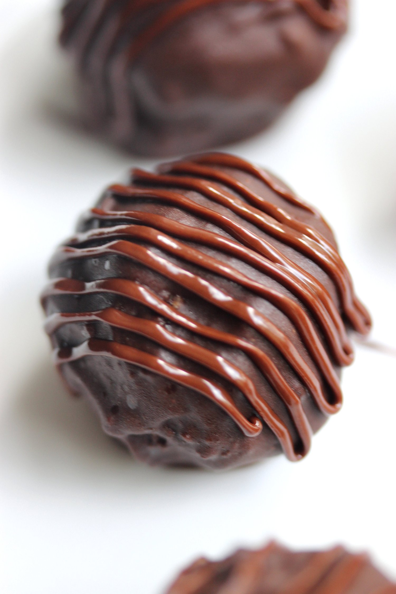
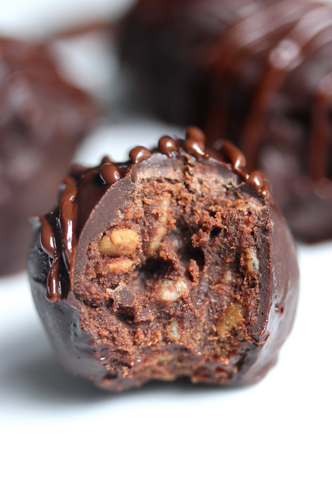

Nocciolata "Nutella" Crunch Truffles (vegan, gluten free)


These nocciolata "nutella" crunch truffles have a sweet, melt in your mouth exterior and a crisp, rich center. Not only is this recipe only 5 ingredients, but it takes less than 10 minutes to make. These truffles make for a vegan, gluten free, and absolutely delicious treat to have as an afternoon slump pick-me up or tasty night time sweet.
The MVP of this recipe is Rigoni di Asiago's Nocciolata Dairy Free spread. It tastes just like nutella, and I'd even venture out to say it's even better. While I never went crazy with nutella before I went vegan, I do admit that I pine over nutella in other people's food pictures now that I am vegan (nutella contains dairy). This Nocciolata Dairy Free spread is so sweet, and the texture is to die for!! It's smoother than nutella, almost like melted chocolate. Truly, this spread makes the entire recipe. It can be found at Whole Foods to make this recipe!! It is made with organic ingredients, and it's even made with free trade cocoa! Not only is Nocciolata Dairy Free spread certified vegan, but it is also completely free of GMO's, preservatives, colors, additives, or artificial sweeteners. It is made with environmentally-responsible cold-pressed sunflower oil, it is free from hydrogenated fats, and it contains far less sugar than other brands. If you want to check out more stuff from Rigoni di Asiago, check them out on Twitter, Instagram, Facebook, and Pinterest.
These truffles...are truly heaven-sent. And they really only took me 10 minutes to make!! The process is really simple, although a little messy. But that's okay, licking your fingers of chocolate and nutella goodness afterwards is the best part! I had a hard time not eating all of the center filling before finishing up the truffles. It's really really addictive. I'm surprised I was able to photograph as many as I did without eating them first, hah. Success!
The center is rich, and crunchy. The rice crisp cereal is an amazing addition to the truffle center. If you've never had crispies in your truffles, try this asap!! It's a nice balance between the rich, smoothness of the truffle exterior. Between the melt in your mouth exterior and the decadent center, the crispies really make this recipe complete.
These nutella crunch truffles are a great snack to have when you're needing a quick energy boost in the middle of the day, or they'd make a delicious treat to give someone you love! They are completely vegan and gluten free, too!
Try out this recipe and let me know what you think! You may enter a chocolate coma like I did. Try it, but I've warned you. Have you ever tried Nocciolata Dairy Free? Like I mentioned before, it's at Whole Foods and I really recommend it!! I will be doing a giveaway soon, too, so stay tuned for that! Every other ingredient is available on Amazon, woohoooo! #lazygirlshopping
Nocciolata "Nutella" Crunch Truffles
Makes: 16 truffles
-
1 TBSP coconut oil
-
2 oz vegan marshmallows
-
1/2 cup Rigoni di Asiago Nocciolata Dairy Free spread
-
1 cup rice crisp cereal
-
4-6 oz vegan chocolate chips
In a medium pot or pan, add the coconut oil and heat to low/medium. Once the coconut oil is melted, add the marshmallows and Nocciolata Dairy Free to the pot. Stir around until the marshmallows fully melt and there are no more lumps, but do not overcook. The marshmallows should melt pretty fast, after just 2-3 minutes. Once everything is melted, turn off the heat and stir in the rice crisp cereal. You're almost done now!
Melt the dairy free chocolate in the microwave, stirring every 30 seconds until melted. You don't want to burn the chocolate! Now take the nutella center and form a ball with your hands. It may seem like it won't hold together, but press down firmly and the rice crisp cereal will compress like you want it to. Once you've formed a ball, roll in the melted chocolate and place on a plate. Repeat the process to make 16 truffles. The amount of melted chocolate you will need will vary on how thick you coat the truffles.
Once you've formed all of the truffles, refrigerate for at least an hour to solidify the chocolate. Drizzle with more Nocciolata Dairy Free (or don't, if you're impatient, but you totally should). Enjoy!!Store any extras in the refrigerator.